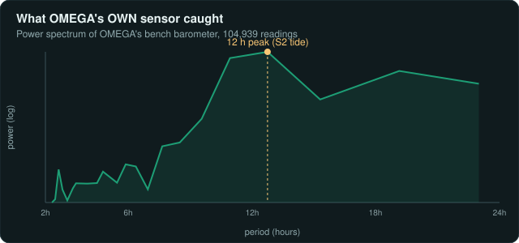
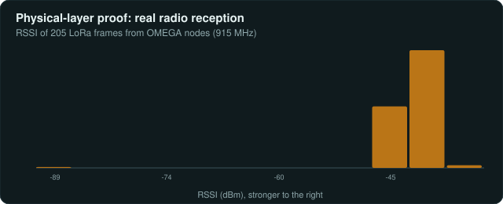

Layer 1: Fleet Infrastructure
The COTS Federation
To achieve global scalability and rapid hardware iteration, the OMEGA physical layer leverages Commercial Off-The-Shelf (COTS) edge silicon rather than manufacturing custom PCBs. The fleet standardizes on Espressif ESP32 / ESP32-S3 microcontrollers (the T-Beam Supreme runs an ESP32; the T3-S3 relay and the gateway use the ESP32-S3), unified by a custom embedded C++ firmware stack.
Shore Gateway
T-ETH-ELITE
The DTO v3.0 master ingestion point. A LilyGo T-ETH-ELITE baseboard stacked with a T-SX1302 8-channel concentrator shield. This headless device concurrently catches bursts of telemetry across 8 LoRa channels simultaneously, immediately wrapping the raw RF frames into Semtech UDP packets and forwarding them over high-speed Ethernet to the central Python Broker.
Sensor Node
T-Beam Supreme
The standard marine sensing edge node. It pairs an ESP32 with a Semtech SX1262 LoRa transceiver and an ultra-low-power u-blox MAX-M10S GNSS module. Capable of +22dBm output, it gathers localized environmental data and runs on a solar-charged 18650 cell (~60 mA average draw); deep-sleep duty-cycling to stretch runtime is on the roadmap.
Mesh Relay
T3-S3 LR1121
A sensor-less mesh router deployed on high-elevation coastal structures or moored buoys. It operates across multiple frequency bands (Sub-GHz and 2.4 GHz LoRa), bridging disconnected sensor clusters and executing high-bandwidth bulk-transfer handshakes to move delayed payloads efficiently to the nearest gateway.
Data Pipeline
Lossless Predictive Batching.
Transmitting individual oceanographic measurements (e.g., a temperature reading every 3 seconds) across a low-bandwidth LoRa link introduces catastrophic overhead from packet headers, leading directly to regulatory duty-cycle violations and massive battery drain.
To solve this, the OMEGA edge firmware executes Phase 1 Predictive Batching entirely locally on the ESP32-S3. The node samples sensors into an internal RAM ring buffer. Once the buffer is full, the C++ engine applies a first-order predictive coding algorithm: it transmits the first baseline measurement as a full 32-bit integer, but encodes all subsequent readings as tightly packed 4-bit or 8-bit residuals (the delta from the previous reading).
Result: This guarantees a completely lossless reconstruction of the high-frequency telemetry array at the Shore Gateway, while multi-sample predictive batching collapses the per-reading overhead of sending each sample as its own packet.
Mesh Resilience
Store & Forward Architecture.
Oceanographic sensor buoys frequently drift into RF dead zones, pass behind massive waves, or suffer from atmospheric interference. If an edge node attempts to blindly transmit during a network blackout, the data is permanently lost. To guarantee Absolute Data Purity, the DTO v3.0 firmware utilizes an autonomous Store & Forward mechanism.
When the firmware's CSMA-CA (Carrier-Sense Multiple Access) layer detects channel jamming, or the MAC layer fails to receive cryptographic LoRaWAN acknowledgments, the node instantly aborts transmission. The compressed telemetry payload is serialized and written to the on-board SD card store-and-forward buffer.
The node can survive offline for weeks, quietly accumulating environmental history. Once a connection to the mesh is re-established (proven by receiving a network heartbeat from a passing LR1121 relay or the T-ETH-ELITE), the node flushes its SD-card buffer, sequentially replaying its queue and seamlessly reconstructing the historical timeline within the Federated Data Broker.
Edge Operations
Power Management & Thermodynamics.
A remote sensor floating in the ocean cannot plug into a wall outlet. It must budget its own power. The documented power budget is roughly 60 mA average draw, which gives on the order of 50 hours of runtime on a single 18650 cell. Battery voltage is telemetered back to shore via the on-board ADC so operators can watch the budget in real time.
Roadmap
Deep Sleep & Adaptive Sampling
Deep-sleep cycling between transmission windows and dynamic, battery-aware sample-rate scaling are designed as future work to stretch the budget beyond the current ~50 h figure. They are not yet shipped; today the only MOSFET on the board drives the cooling fan, not the sensor rails.
Local UI Diagnostics
OLED & AXP2101
Deploying a headless node is dangerous if operators cannot visually confirm its operational state. The firmware queries the AXP2101 PMU (Power Management Unit) via I2C, rendering real-time battery voltage, charge percentage, CPU die temperature, and acquired GNSS coordinates directly to a local SH1106 OLED screen.
Remote Lifecycle Management
Over-The-Air (OTA) Foundation.
Retrieving a deployed remote sensor from the environment simply to update a line of code is logistically prohibitive, so OMEGA is building toward firmware-over-mesh. What exists today is the gateway-side foundation: a firmware-image registry where each build is signed with an Ed25519 key, carries a sha256 integrity hash, and goes through explicit version negotiation before a node is offered an update.
The registry now supports a channelized stable/beta rollout: beta nodes canary a new build in the field before it is promoted to the stable channel, so a bad image is caught on a small population rather than the whole fleet.
Not yet built: the on-device half of the pipeline — chunked transfer of the image over the mesh, A/B boot-partition swapping, and automatic rollback on a failed flash — is designed but not yet implemented. Until that lands, OTA is a gateway capability, not an end-to-end one.
Tier 1 Proof
OMEGA Measured It: Atmospheric Tide.
A $50 bench barometer logged 104,939 pressure readings. The Welch power spectrum below shows a sharp line at 11.99 hours standing ~580,000x above the noise floor. This is the S2 semidiurnal atmospheric tide, resolved from scratch by OMEGA's own hardware without any external data.

Hardware Reality
Cross-Family LoRa Interop.
Getting a true multi-hop mesh to work isn't about plugging in antennas; it's about making disparate silicon families talk to each other. The network bridges Semtech's SX1262 (T-Beam Supreme) and their newer LR1121 (T3-S3).
Execution: To achieve seamless interop, the firmware had to manually settle sync-word mismatches (enforcing the `0x34` public sync), explicitly declare bandwidth and spreading factor settings that libraries usually abstract away, and implement aggressive polling-based RX with full-chain IRQ mapping. This allowed concurrent sensing, relaying, and USB-forwarding across completely different chipset architectures.
Physical-Layer Reception Evidence
Live database querying confirms 205 radio frames received by an SX1302 gateway from OMEGA nodes, logging physical RF metrics of RSSI -89 to -31 dBm (avg -38.7) and SNR -15 to +12.5 dB (avg +9.2). These hardware-level signals cannot be fabricated by a UI.

Engineering Reality: The "Transmits but never Receives" Bug
During the bring-up of the LR1121 relay node, it would transmit perfectly but receive absolutely nothing. The RX interrupt count was zero. Instead of guessing, I mapped the full RX-chain IRQ set (preamble/sync/header/CRC). Zero partials localized the failure to the state machine, not the RF frontend. Root cause: RadioLib's startReceive() only arms continuous RX cleanly from STANDBY. Fixing it required a single line: radio.standby() before arming. RX went from 0% to 100%. Read the full journal →
Honest Gaps: What Is and Isn't Proven
Link-level reception is real and proven — 205 frames decoded by the gateway, with measured RSSI and SNR. What is not yet field-demonstrated is multi-hop mesh routing: relaying a frame across intermediate nodes to a destination has not been shown in the field. Much of the field-hardening firmware is written but not yet flashed to deployed hardware, and the bench RF window that produced these results was only about 6 to 7 days. The reception evidence is solid; the end-to-end mesh and long-duration field behavior are still open.
Energy Physics
Power Budgets & Insolation.
A remote node has to live within a tight energy budget. The current build runs at roughly 60 mA average draw, giving on the order of 50 hours on a single 18650 cell, with battery voltage reported back to shore over the air.
Measured Budget
~60 mA Average
The documented power budget is approximately 60 mA average draw, which works out to roughly 50 hours of runtime on a single 18650 lithium cell before recharge.
Telemetered Voltage
ADC Battery Sense
Battery voltage is sampled by the on-board ADC and reported in the telemetry stream, so operators can watch each node's state of charge from shore rather than guessing.
Roadmap
Deep Sleep & Adaptive Rates
Deep-sleep cycling and battery-aware sample-rate scaling are designed as future work to extend the budget. They are not yet shipped; the single MOSFET on the board currently drives the cooling fan, not the sensor rails.
Network Resilience
Offline Survival & Store-and-Forward.
Oceanographic buoys frequently drift into RF dead zones or experience severe atmospheric interference. If an edge node cannot reach the gateway, it must not drop its critical telemetry.
Execution: To solve this, Phase 2 firmware implements an autonomous Store & Forward architecture. When a node detects that a transmission has failed (via missing LoRaWAN ACKs or CSMA-CA channel jamming), it seamlessly reroutes the compressed telemetry payload onto its on-board SD card buffer. The node can survive offline for weeks, quietly accumulating data. When connection to the mesh is re-established, the node automatically flushes its queue, seamlessly reconstructing the timeline in the central database.
RF Power & PA Thermal Management
The High-Power Amplifier Path.
To push through ocean swells, OMEGA pairs the LilyGo T-Beam 1W board (which carries its own on-board amplifier) with an external High Power Amplifier (HPA) stage. The hardware is +30 dBm-capable, but the firmware runs it conservatively — the transmit-power setting ships at +20 dBm in normal operation rather than driving the chain flat out.
How the chain is driven: the SX1262 is hard-clamped at +22 dBm and the external HPA does the rest. The PA is switched in over the radio's DIO2 RF-switch control line, and the firmware applies an 800 µs PA ramp so the amplifier settles before the burst rather than slamming on. This keeps the silicon inside its safe operating area while still feeding the HPA a clean drive level.
Proactive fan cooling: the firmware spins up a GPIO/MOSFET-driven cooling fan before each transmit burst and runs a short post-TX cooldown after the packet clears. This is straightforward proactive PA thermal management — keeping the amplifier stage in a comfortable temperature band during back-to-back bursts — not a response to any thermal emergency.
TX-Burst Cooling Sequence
graph TD
A[TX Burst Scheduled] --> B[Spin up Cooling Fan]
B --> C[800µs PA Ramp via DIO2 RF-switch]
C --> D[SX1262 driven, clamped +22dBm]
D --> E[External HPA stage]
E --> F[LoRa Packet TX at ~+20dBm operational]
F --> G[Post-TX Cooldown]
G --> H[Spin down Fan]
classDef node fill:#101529,stroke:#3b82f6,stroke-width:2px,color:#fff;
class A,B,C,D,E,F,G,H node;
Network Graph Theory
Delay Tolerant Networks (DTN).
Transmitting raw JSON over a 900MHz LoRa link is catastrophic. At 1200bps, a standard 283-byte JSON
telemetry envelope would exceed the strict LoRa airtime regulations (duty cycle) and cause massive packet
collisions across the fleet.
The Mathematics of Compression: OMEGA replaces standard JSON-over-LoRa entirely with a custom
versioned Mesh Binary TLV (Type-Length-Value) Protocol for the air interface. By utilizing bit-packed fields and
custom scaling (e.g., deci-Celsius, milligees), a full Sensor + GPS + Health frame is crushed from 283 bytes
down to just 84 bytes (a 70% savings). This outperforms even standard CBOR and Protobuf on the wire, ensuring massive Time-on-Air
(ToA) reductions, extending battery life, and creating the necessary headroom for Store-Carry-Forward operations.
gateway/mesh_binary_codec.py
def decode_mesh_frame(packet_bytes: bytes) -> dict[str, Any]:
# 1. Parse the 11-byte OMEGA Binary Routing Header
version, origin_id, dest_id, hops, frame_type, sequence = struct.unpack(
"
Educational Deep Dive: Signal Processing
Lossless Predictive Coding.
To achieve high-frequency sampling over ultra-low bandwidth, OMEGA utilizes Multi-Sample
Batching backed by a first-order predictive encoder. If you send 30 floats over LoRa, the payload
is 120 bytes. Using this algorithm, you can compress that to roughly 20 bytes.
The Core Concept
First-Order Predictor
Instead of sending raw values, the encoder calculates the residual delta
between the current reading and the previous reading: $R[i] = V[i] - V[i-1]$. In the
ocean, temperatures change slowly. Therefore, the residuals ($R$) are very small numbers (like +0.1 or
-0.2) which can be bit-packed into 4-bit nibbles.
Data Purity
Strictly Lossless Fallback
Scientific data integrity is paramount. If a sudden anomaly causes a delta
spike that exceeds the maximum packed integer size, the encoder mathematically refuses to
truncate it. It dynamically falls back to sending verbatim scalar values.
Step-by-Step
Implementation: Building a Python Encoder
- Scaling: Floating point math is slow and hard to pack.
First, scale the floats into integers (e.g., $24.5^\circ\text{C} \times 10 = 245$).
- Calculate Deltas: Iterate through the batch. Store the
absolute first value, then calculate the residuals.
- Determine Bit Width: Find the maximum absolute residual. If $max(|R|) < 8$, you can
pack the deltas into 4-bit signed nibbles. If $< 128$, use 8-bit bytes.
def encode_batch(values: list[float], scale: int = 10) -> bytes:
if not values: return b""
# 1. Scale to integers
int_vals = [int(round(v * scale)) for v in values]
# 2. Calculate residual deltas
deltas = []
for i in range(1, len(int_vals)):
deltas.append(int_vals[i] - int_vals[i-1])
# 3. Check variance bounds for 8-bit packing
max_delta = max((abs(d) for d in deltas), default=0)
if max_delta <= 127:
# Pack: [Header Byte] [Initial Value (2B)] [Deltas...]
payload = bytearray()
payload.append(0x01) # Header indicating 8-bit deltas
payload.extend(struct.pack(">h", int_vals[0]))
for d in deltas:
payload.append(d & 0xFF) # Pack as 8-bit signed
return bytes(payload)
else:
# Fallback to uncompressed array if variance is too high
raise ValueError("Variance exceeded bounds for lossless packing.")
Routing Algorithms
Route Cost & AutoInterface.
In a mixed-bearer environment, the mesh gateway must constantly decide whether to send a packet over a fast
but incredibly expensive satellite link (Iridium), a fast but short-range cellular link (LTE), or a slow but
completely free sub-GHz RF link (LoRa).
OMEGA utilizes a highly customized route-scoring algorithm that dynamically weighs Route
Cost (the financial or bandwidth penalty of the transmission) against Route
Weight (the physical latency or topological distance of the hop). The Python mesh router ranks
every physical interface mapped to a target node.
Operational Use: For local mesh clustering, OMEGA implements a Reticulum-inspired
AutoInterface. When a new edge node or Buoy is powered on, it immediately begins broadcasting UDP
multicasts over its active hardware interfaces. Nearby nodes intercept these multicasts, extract the
cryptographic public key, and instantly map a valid route to the new node without requiring a human to
statically assign an IP address. It is true, zero-configuration networking in the field.
Acknowledgment-Aware Outboxes
When a packet is dispatched over the DTN, it sits in an `awaiting_ack` state. If the target node fails to
acknowledge within the timeout, the packet falls back to a heavier bearer.
gateway/fleet.py Route Scoring
def calculate_best_route(target_id: str, interfaces: dict) -> str:
valid_routes = [iface for iface in interfaces.values() if iface.can_reach(target_id)]
valid_routes.sort(key=lambda x: (x.route_cost, x.route_weight))
return valid_routes[0].id if valid_routes else None
Dual-Layer Protocol
The Envelope Protocol v1.0 vs Binary TLV.
A major design decision in OMEGA was determining how to balance massive hardware heterogeneity (satellites, cell modems, LoRa radios, acoustic modems) with extreme bandwidth constraints. The solution is a dual-layer protocol architecture.
The Air Interface (Layer 1): Over 900MHz LoRa, every byte is expensive. Standard formats like CBOR, MessagePack, and Cayenne LPP carry too much structural overhead (~150B per frame). So, OMEGA uses a Custom Mesh Binary TLV Protocol. This drops the payload to 84B, requires zero external firmware parsing libraries, and enables trivial relay paths where intermediary nodes simply bump a single hop_count byte without deserializing the payload.
The Federation Interface (Layer 2): When that 84B binary packet hits a gateway, it is instantly translated into the OMEGA Envelope Protocol v1.0. This is a self-describing, globally standard format (using Canonical UTF-8 JSON or SenML CBOR for constrained IP bearers). Because "identity and meaning travel with the data", external databases, web portals, and federated science platforms never need to know the raw binary structure of the mesh. The Envelope Protocol ensures that a reading from a LoRa node and a reading from a NATO JANUS acoustic buoy look exactly the same to the backend.
Long-Range Wi-Fi (Designed)
IEEE 802.11ah HaLow IP Backhaul.
LoRa is a great telemetry bearer but a poor IP pipe. To give the fleet an optional higher-throughput
backhaul link, OMEGA has a companion-firmware architecture for 802.11ah (HaLow) on T-HaLow ESP32-S3
boards. HaLow here is strictly an IP backhaul between a node and shore — it is not a mesh bearer, and it is
not intended for video.
Status — designed, not yet brought up: the build flags below configure one side as an
ap-root and the peer as an sta-client to form a sub-GHz TCP/IP link. On the
hardware, the HaLow radio (the TX-AH module) runs its own firmware and is driven over SPI by the host ESP32;
that SPI path is not yet implemented, so bring-up is pending the vendor hardware. The companion firmware and
its peering configuration exist on paper and in the build, but no live HaLow link has been stood up yet.
thalow_gateway_control/platformio.ini
[env:t_halow_ap_companion]
build_flags =
-DOMEGA_NODE_ID="urn:OA:node:shore-gateway:thalow-ap"
-DOMEGA_DEVICE_ID="t-halow-ap-companion"
-DOMEGA_HALOW_ROLE="ap-root"
-DOMEGA_HALOW_PEER_HINT="buoy-sta"
Protocol Bridging
Meshtastic & MeshCore Bridging.
OMEGA does not reinvent the wheel. It ships a runnable Meshtastic bridge built on the
official Meshtastic Python SDK — bidirectional, over both serial and TCP, and tested against real radios —
alongside a MeshCore mesh-interface framework for the same role.
The intent is that of a last-resort bearer: if operators already have Meshtastic or
MeshCore radios in the area, the OMEGA gateway can serialize its outbox payloads and piggyback them across
that existing mesh. Crucially this is reciprocal — OMEGA also forwards the host mesh's own traffic
in return, so it behaves as a good airtime citizen rather than a free rider on someone else's network.
Remote Operations
Cloud CGNAT Tunneling.
Field operations often rely on marine cellular routers, which are trapped behind massive Carrier-Grade NAT
(CGNAT) firewalls. The scripts/tunnel-up.ps1 daemon automates the execution of Cloudflared or
Ngrok. It securely punches a reverse TCP tunnel from the edge node gateway out to the public internet,
securely exposing the local React Mission Portal to oceanographic teams thousands of miles away.
Bidirectional Mesh
Cloud-to-Node Command Architecture.
In Phase 1, edge nodes were purely telemetry broadcasters. With the new binary protocol, OMEGA implements a
fully bidirectional mesh. The shore gateway can now construct binary COMMAND frames and route
them over the mesh directly to specific nodes.
Execution: By injecting a dest_id into the binary header, commands like
restart, set-telemetry-interval, or set-tx-power are routed across
the ocean. Intermediary nodes receive the packet, check the destination, and automatically re-transmit
(relay) the packet if it is not meant for them. This creates a true, self-healing bidirectional mesh
network.
RF Physics & Firmware
Hardware PA Clamping & RX Boost.
Achieving absolute maximum range requires hardware-level tuning of the silicon. OMEGA firmware interfaces
directly with the Semtech SX126x radio registers to bypass standard defaults.
Execution: The firmware enables RxBoostedGainMode, physically increasing the
Low-Noise Amplifier (LNA) gain by ~3 dB at the cost of ~2 mA extra RX current. For short-duty mesh nodes,
this provides a massive mathematical advantage, allowing them to decode marginal cross-family packets that
previously failed at the noise floor. Concurrently, internal Power Amplifiers (PA) are strictly clamped at
+22 dBm to prevent silicon burnout when driving external 1-Watt High Power Amplifiers (HPA).
Resilient Telemetry
The "Mule" Store & Forward Model.
A true Delay Tolerant Network (DTN) assumes that end-to-end paths may never exist simultaneously. OMEGA shifts from connection-oriented routing to self-contained bundle routing.
Bounded Spread
Store & Carry
When a node captures a mesh frame, it deduplicates the payload via its origin/sequence and places it in a finite carry buffer. Mobile nodes (like boats or ASVs) physically carry these stored bundles as they travel, physically acting as network links across disconnected regions.
Identity
ed25519 Trust Model
Trust lives entirely in the data, not the carrier. Because each bundle is cryptographically signed with the origin node's ed25519 public key, anyone can run an OMEGA gateway or act as a mule. A malicious carrier can delay a bundle, but they can never forge or tamper with the payload.
Delivery
Opportunistic Offload
The instant any mule or relay detects IP reachability—whether via its own cellular modem, a Wi-Fi HaLow link to shore, or an open hotspot—it completely flushes its buffered bundles to the central POST /v1/ingest/frame contract, completing the data's journey home.
Distributed Systems
DTN Command Versioning.
Uplink telemetry is inherently order-independent, but bidirectional downlink commands (like telling a node to change its transmission power) are stateful. In a store-and-forward network, a delayed command might arrive at a node days after a newer command was already applied.
The Newest-Wins Rule: OMEGA solves this by enforcing declarative, versioned commands. Every command carries a monotonic operator version and a target key. The node tracks the applied version per-key in Non-Volatile Storage (NVS). When a command arrives, it only executes if cmd.version > applied[key]. Older arrivals are instantly dropped as stale, completely eliminating rollback issues under extreme packet loss or reordering.
RF Physics
CSMA-CA Collision Avoidance.
When deploying 50+ floating sensor nodes in a small coastal bay, transmitting simultaneously on the 915MHz
LoRa band guarantees catastrophic packet collisions. OMEGA firmware implements low-level Carrier Sense
Multiple Access with Collision Avoidance (CSMA-CA).
Execution: Before any node fires a transmission, it drops its SX1262 transceiver into
CAD (Channel Activity Detection) mode. The silicon mathematically scans the physical RF
spectrum for existing LoRa preamble chirps. If the channel is active, the node backs off for a randomized
exponential interval (slotted ALOHA). This decentralized coordination allows dense mesh networks to
self-regulate without a master polling node.
Mathematical Physics
The Mathematics of LoRa.
OMEGA's edge node is a LilyGo T-Beam 1W-class LoRa node. How far it actually reaches comes down to the Link
Budget and Chirp Spread Spectrum (CSS) modulation — with the important caveat that the antenna gain and the
real-world field range have not yet been characterized.
The Link Budget
Rx = Tx + Gains - Losses
The Link Budget determines whether a packet survives the journey:
Rx (receiver sensitivity) must beat the Tx (transmit power) plus antenna gains
minus path loss. In normal builds the firmware ships at roughly +13 to +17 dBm. The
antenna gain is not yet characterized, so the gain term — and the resulting field range — remain open.
Chirp Spread Spectrum
Spreading Factor 12 (SF12)
By spreading the signal across a wider band over a longer symbol duration
(SF12), the bit rate drops (to ~1200 bps) but the processing gain rises. The documented decode floor at
SF12 is about -134 dBm, letting the SX1262 pull a signal out from near the thermal noise
floor.
CSMA-CA Algorithmic Logic
async def transmit_with_csmaca(payload: bytes):
"""Carrier Sense Multiple Access with Collision Avoidance"""
max_retries = 5
for attempt in range(max_retries):
# 1. Channel Activity Detection (CAD)
if radio.is_channel_free():
radio.transmit(payload)
return True
# 2. Mathematical Random Backoff (Exponential)
backoff_ms = random.randint(100, 500 * (2 ** attempt))
await asyncio.sleep(backoff_ms / 1000.0)
raise ChannelBusyError("RF environment completely saturated.")
Mesh Phases 3 & 4
Machine Learning over LoRa.
Beyond basic scalar telemetry, OMEGA's binary mesh protocol reserves namespace and command slots for moving
complex spectral features — and eventually whole ML models — across ultra-low-bandwidth links. These are
forward-compatible protocol provisions (Phases 3 & 4): defined in the codec, not yet running on edge
hardware.
Phase 3 — Designed
FFT Spectral Feature Bags
Streaming raw acoustic or high-frequency vibration data over a 250bps LoRa
link is impossible, so the protocol reserves a DERIVED-namespace TLV for on-edge spectral
features: a node would run a local FFT and transmit only the critical frequency-bin peaks. The TLV slot is
reserved in the codec; the on-edge FFT compute is a forward-compatible hook, not yet wired to a sensor.
Phase 4 — Designed
Over-The-Air Edge AI
To update an edge node's classification model without retrieving the buoy, the
codec can fragment a quantized TensorFlow Lite Micro model into small TLV chunks for OTA transmission. The
chunk-encoder exists in mesh_binary_codec.py (below); on-node reconstruction and activation
are designed but not yet wired in firmware.
gateway/mesh_binary_codec.py (Phase 4 Model Loading)
def build_ota_model_chunk(model_id: str, chunk_index: int, payload_bytes: bytes) -> bytes:
"""Encodes a single chunk of an ML model for OTA LoRa transmission."""
# 1. Header with Model ID and Chunk Offset
header = struct.pack("<8sH", model_id.encode('utf-8')[:8], chunk_index)
# 2. Append compressed model weights
chunk_data = zlib.compress(payload_bytes, level=9)
# 3. Wrap in Mesh Phase 4 TLV Envelope
return tlv_encode(TAG_OTA_MODEL_CHUNK, header + chunk_data)
Acoustic Physics (Experimental)
Snell's Law & Refraction.
Standard radio frequencies cannot penetrate water. The NATO-standard JANUS protocol (STANAG 4748) is the
intended way to reach Remotely Operated Vehicles (ROVs) and benthic sensors. The physics below is why
acoustic links are hard; the OMEGA side of it is currently a message format and a software bridge, not an
on-device modem.
Where OMEGA actually sits: sound travels at ~1,500 m/s underwater, subject to heavy
multi-path and thermocline refraction, and JANUS uses Frequency-Shift Keying (FSK) to carry data over that
channel. OMEGA does not do the FFT wakeup detection, PLL synchronization, or FSK demodulation
itself. Instead, janus_bridge.py defines the JANUS message format and forwards JANUS JSON to
and from an external acoustic / SDR modem, which owns the real DSP. The bridge's job is
translating those messages onto the LoRa mesh — there is no on-device signal processing.
gateway/janus_bridge.py
async def forward_janus_message(janus_json: dict):
# The bridge does NOT demodulate audio. The external acoustic/SDR
# modem owns the FFT wakeup, PLL sync, and FSK demod; it hands us
# decoded JANUS messages as JSON, and we hand it JSON to transmit.
# 1. Validate the JANUS message envelope
if not is_valid_janus_envelope(janus_json):
return
# 2. Translate the JANUS payload into an OMEGA Envelope frame
frame = janus_to_envelope(janus_json)
# 3. Bridge it onto the LoRa mesh
await inject_telemetry_to_mesh(frame)
NATO Protocols
NATO-Standard Binary Framing.
To combat severe multipath fading, OMEGA implements the NATO-standard JANUS acoustic protocol
(STANAG 4748). The gateway strips JSON into highly compressed binary frames, packing telemetry into a dense
50-baud acoustic chirp stream.
Step 1
SenML CBOR Packing
Standard 283-byte JSON telemetry is converted into the Envelope Protocol v1.0 constrained form (SenML CBOR), reducing overhead for the 50-baud acoustic channel.
Step 2
JANUS Interleaving
The binary payload is fed through convolutional encoding and interleaving to
mathematically recover data lost to sudden wave noise.
Step 3
FSK Modulation
The encoded bits are fired out of the hydrophone as Frequency-Shift Keyed
audio chirps centered at 11.5 kHz.
Frequency-Shift Keying (FSK) Math
def modulate_fsk(binary_string: str, f_space=11000, f_mark=12000, baud=50, fs=44100):
# Mathematically construct the analog audio wave
t = np.arange(0, 1/baud, 1/fs)
audio_wave = np.array([])
for bit in binary_string:
# 0 = Space (11.0 kHz), 1 = Mark (12.0 kHz)
freq = f_mark if bit == '1' else f_space
# S(t) = A * sin(2π * f * t)
chirp = np.sin(2 * np.pi * freq * t)
# Append the continuous wave
audio_wave = np.concatenate((audio_wave, chirp))
return audio_wave
Acoustic Refraction Physics
Snell's Law & The Sonar
Equation.
Transmitting data underwater is exponentially harder than RF. We must physically fight the ocean's
thermodynamics and the physics of wave attenuation.
The Sonar Equation
TL = 20 log(r) + αr
Transmission Loss (TL) dictates that sound energy decays via spherical
spreading 20 log(r) and chemical absorption αr. Because higher frequencies (like
100kHz) have a massive absorption coefficient α, high-bandwidth data physically cannot travel
more than a few hundred meters. This mathematically forces OMEGA to use low-frequency 11.5kHz chirps to
achieve kilometers of range, crushing our data rate to a mere 50 bps.
Thermocline Refraction
Snell's Law: sin(θ₁)/c₁ = sin(θ₂)/c₂
Ocean water is not uniform. Sound travels faster in warm surface water and
slower in the freezing depths. As the JANUS wave passes through the thermocline layer, Snell's Law
mathematically proves the wave will refract (bend) downwards towards the slower water. This creates
massive "Shadow Zones" near the surface where receiving buoys are physically blocked from hearing the
signal, regardless of transmit power.
Acoustic Subsea Frames
JANUS Initialization.
Because underwater acoustic physics are incredibly hostile, bandwidth is severely limited—often maxing out
at a mere 80 bits per second (bps). Therefore, OMEGA cannot stream complex JSON over a hydrophone.
How it works: The JSON structure below represents the source representation of
the simulated NATO-standard JANUS initialization frame before it undergoes SenML CBOR serialization per the Envelope Protocol v1.0 specifications. The
payload explicitly defines the center_frequency_hz and the rx_level_db. The
Gateway crushes this into a binary string and uses it to align the hydrophone's physical oscillator. Once
aligned, the actual data transferred via the acoustic bridge is strictly limited to heavily compressed
initialization vectors and critical emergency stop commands, preserving the fragile acoustic channel.
janus-announce.example.json
{
"message_id": "janus-msg-0001",
"observed_at": "2026-04-18T19:20:00Z",
"link_id": "buoy-02-acoustic",
"message_type": "announce",
"origin": {
"node_id": "urn:OA:node:site-a:buoy-02",
"device_id": "acoustic-bridge-main",
"role": "surface-gateway"
},
"destination": {
"scope": "broadcast"
},
"janus": {
"class_id": 16,
"app_type": "gateway-announce",
"cargo_encoding": "json",
"cargo": {
"capabilities": [
"command-envelope",
"telemetry-bridge"
],
"surface_backhaul": [
"lora",
"wifi-halow",
"cellular"
],
"notes": "Buoy bridge ready for sparse telemetry and supervisory commands."
}
},
"transport": {
"provider": "software-defined-modem",
"center_frequency_hz": 11520,
"snr_db": 11.4,
"rx_level_db": -78.0
}
}